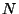
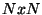

| What's New in Python 2.3 |
In Python 2.2, generators were added as an optional feature, to be
enabled by a from __future__ import generators directive. In
2.3 generators no longer need to be specially enabled, and are now
always present; this means that yield is now always a
keyword. The rest of this section is a copy of the description of
generators from the ``What's New in Python 2.2'' document; if you read
it back when Python 2.2 came out, you can skip the rest of this section.
You're doubtless familiar with how function calls work in Python or C. When you call a function, it gets a private namespace where its local variables are created. When the function reaches a return statement, the local variables are destroyed and the resulting value is returned to the caller. A later call to the same function will get a fresh new set of local variables. But, what if the local variables weren't thrown away on exiting a function? What if you could later resume the function where it left off? This is what generators provide; they can be thought of as resumable functions.
Here's the simplest example of a generator function:
def generate_ints(N):
for i in range(N):
yield i
A new keyword, yield, was introduced for generators. Any function containing a yield statement is a generator function; this is detected by Python's bytecode compiler which compiles the function specially as a result.
When you call a generator function, it doesn't return a single value;
instead it returns a generator object that supports the iterator
protocol. On executing the yield statement, the generator
outputs the value of i, similar to a return
statement. The big difference between yield and a
return statement is that on reaching a yield the
generator's state of execution is suspended and local variables are
preserved. On the next call to the generator's .next() method,
the function will resume executing immediately after the
yield statement. (For complicated reasons, the
yield statement isn't allowed inside the try block
of a try...finally statement; read PEP 255 for a full
explanation of the interaction between yield and
exceptions.)
Here's a sample usage of the generate_ints() generator:
>>> gen = generate_ints(3) >>> gen <generator object at 0x8117f90> >>> gen.next() 0 >>> gen.next() 1 >>> gen.next() 2 >>> gen.next() Traceback (most recent call last): File "stdin", line 1, in ? File "stdin", line 2, in generate_ints StopIteration
You could equally write for i in generate_ints(5), or
a,b,c = generate_ints(3).
Inside a generator function, the return statement can only
be used without a value, and signals the end of the procession of
values; afterwards the generator cannot return any further values.
return with a value, such as return 5, is a syntax
error inside a generator function. The end of the generator's results
can also be indicated by raising StopIteration manually,
or by just letting the flow of execution fall off the bottom of the
function.
You could achieve the effect of generators manually by writing your
own class and storing all the local variables of the generator as
instance variables. For example, returning a list of integers could
be done by setting self.count to 0, and having the
next() method increment self.count and return it.
However, for a moderately complicated generator, writing a
corresponding class would be much messier.
Lib/test/test_generators.py contains a number of more
interesting examples. The simplest one implements an in-order
traversal of a tree using generators recursively.
# A recursive generator that generates Tree leaves in in-order.
def inorder(t):
if t:
for x in inorder(t.left):
yield x
yield t.label
for x in inorder(t.right):
yield x
Two other examples in Lib/test/test_generators.py produce solutions for the N-Queens problem (placing  queens on an  chess board so that no queen threatens another) and the Knight's Tour (a route that takes a knight to every square of an chessboard without visiting any square twice).
The idea of generators comes from other programming languages, especially Icon (http://www.cs.arizona.edu/icon/), where the idea of generators is central. In Icon, every expression and function call behaves like a generator. One example from ``An Overview of the Icon Programming Language'' at http://www.cs.arizona.edu/icon/docs/ipd266.htm gives an idea of what this looks like:
sentence := "Store it in the neighboring harbor"
if (i := find("or", sentence)) > 5 then write(i)
In Icon the find() function returns the indexes at which the
substring ``or'' is found: 3, 23, 33. In the if statement,
i is first assigned a value of 3, but 3 is less than 5, so the
comparison fails, and Icon retries it with the second value of 23. 23
is greater than 5, so the comparison now succeeds, and the code prints
the value 23 to the screen.
Python doesn't go nearly as far as Icon in adopting generators as a central concept. Generators are considered part of the core Python language, but learning or using them isn't compulsory; if they don't solve any problems that you have, feel free to ignore them. One novel feature of Python's interface as compared to Icon's is that a generator's state is represented as a concrete object (the iterator) that can be passed around to other functions or stored in a data structure.
See Also:
| What's New in Python 2.3 |